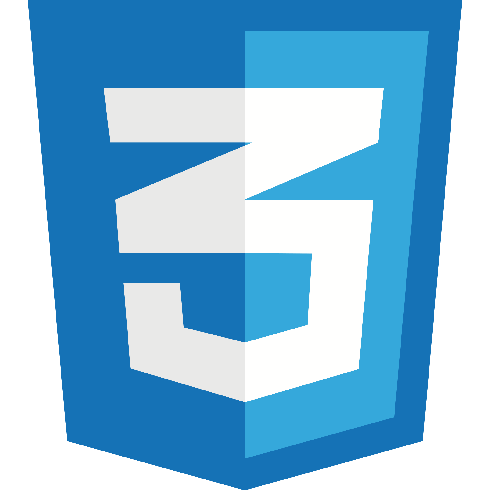
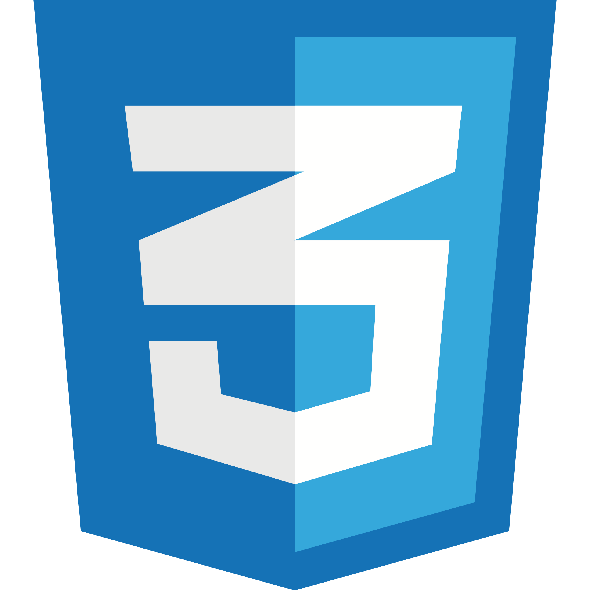
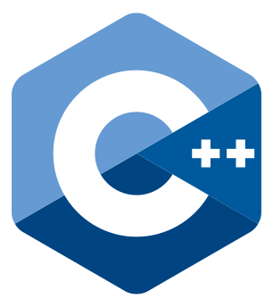
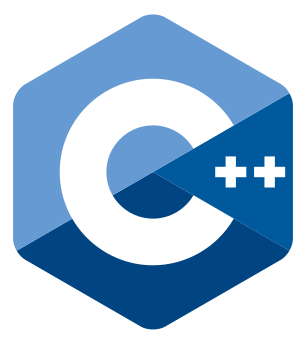

Development
I hope to make development my craft. I love that it allows me to be creative, solve complex problems and ultimately build a working product. My goal is to write more efficient code.

Growth (Sales)
Working in software sales has given me a holistic perspective of the B2B software business and confidence talking to clients/ prospects. I have made over 3000 cold calls, sent thousands of messages to prospects and conducted software demos. I believe selling software allows us to build more software.

Teamwork
Teamwork is crucial for moving fast, sharing knowledge and keeping accountability. I have experience both working in and leading international team projects.
 

 
